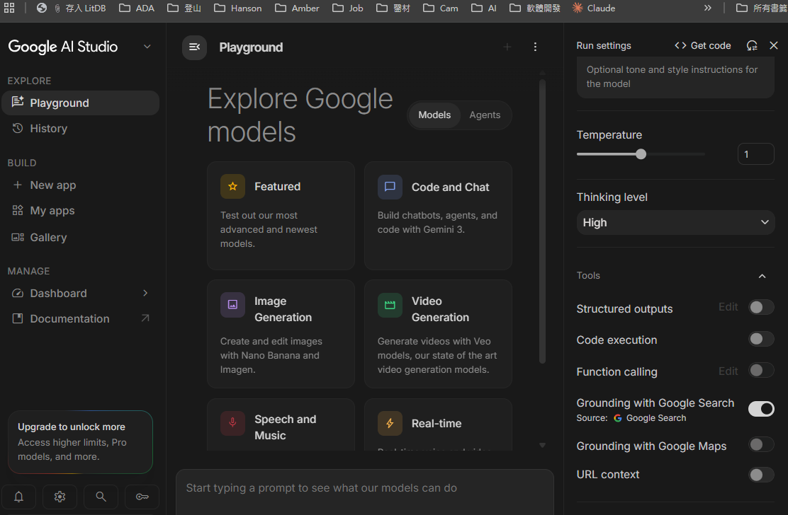

Google Patents
Coating composition for a urinary catheter (US8133580B2)
可作為「泌尿導管親水潤滑塗層」的專利範例，重點在導管用塗層組成、濕潤潤滑性與附著耐久性。
用 Gemini 接上 Google Search，讓回答可以參考即時公開網頁資料、附上引用來源，並把 API 範例直接複製到專案裡。
Grounding with Google Search 是 Gemini 的內建搜尋工具。開啟後，模型會在需要時自動產生搜尋查詢、讀取搜尋結果、整合資訊，最後輸出帶有引用註記的回答。
適合用在最新事件、公司/產品資訊、法規或標準查核、需要來源追溯的問答。它不是「保證正確」的按鈕，而是讓模型回答更可查證。
重要：右側 Tools 裡的 Grounding with Google Search 必須是啟用狀態。只是在 prompt 裡要求「請附來源」不等於有啟用 grounding，沒打開開關時可能會失效或只產生一般模型回答。
在 AI Studio 的 Run settings 面板往下找到 Tools，確認 Grounding with Google Search 右邊的切換鈕已開啟。這個開關沒打開時，模型不會真的使用 Google Search grounding。

Google 官方文件在 2026 年 6 月後建議新專案優先使用 Interactions API。下面是最小可用版本，重點是把 tools 設為 [{ type: "google_search" }]。
import { GoogleGenAI } from "@google/genai";
const client = new GoogleGenAI({});
const interaction = await client.interactions.create({
model: "gemini-3.5-flash",
input: "Summarize today's AI news with sources.",
tools: [{ type: "google_search" }]
});
console.log(interaction.output_text);from google import genai
client = genai.Client()
interaction = client.interactions.create(
model="gemini-3.5-flash",
input="Summarize today's AI news with sources.",
tools=[{"type": "google_search"}],
)
print(interaction.output_text)curl -X POST "https://generativelanguage.googleapis.com/v1beta/interactions" \
-H "x-goog-api-key: $GEMINI_API_KEY" \
-H "Content-Type: application/json" \
-d '{
"model": "gemini-3.5-flash",
"input": "Summarize today AI news with sources.",
"tools": [{"type": "google_search"}]
}'下面用 醫療導管塗層親水導管 當作示範查詢，呈現產品頁可以如何把 grounding 結果鑲入回答。這是靜態展示格式，正式產品應以 API 回傳的 annotations 與 google_search_result 動態生成。
醫療導管塗層親水導管
開啟 Google 搜尋
可作為「泌尿導管親水潤滑塗層」的專利範例，重點在導管用塗層組成、濕潤潤滑性與附著耐久性。
Hydromer 多用途親水塗層平台，可用來說明 PVP、聚氨酯分散液、交聯劑與醫療器材塗層應用的檢索方向。
適合補充學術文獻面向，例如親水導管、摩擦降低、感染風險、尿道/血管導管臨床使用經驗等。
google_search_call記錄模型實際送出的搜尋查詢。可用來除錯、觀察模型為什麼查了那些關鍵字。
google_search_result包含搜尋結果資訊與 search_suggestions HTML。若做成產品 UI，要留意 Google 的展示要求。
annotations在模型輸出的文字片段上附 url_citation，包含來源標題、URL、起訖位置。
output_text最容易直接顯示的回答文字。不過正式產品應同時顯示來源，不只顯示答案。
可以查詢模型訓練截止後發生的事件，降低過時答案的風險。
模型會判斷是否需要搜尋，並可產生一個或多個搜尋查詢。
透過 url_citation 的文字區間和 URL，把回答中的特定句子連到來源。
官方文件提到可和 URL context、code execution 等工具組合，用於更完整的研究流程。
google_search_retrieval；目前文件建議現行模型使用 google_search。高風險領域如醫療、法律、金融，不要只把「有引用」當作正確。應檢查引用是否真的支持該句結論。
| 面向 | Google AI Studio / Gemini Grounding | Perplexity 類搜尋問答 |
|---|---|---|
| 定位 | 開發者工具，可把 Google Search grounding 嵌入自己的 Gemini app。 | 偏向現成搜尋問答產品，開箱即用。 |
| 控制權 | 可控制 prompt、模型、API 流程、引用 UI、後端整合。 | 產品體驗完整，但底層流程控制通常較少。 |
| 適合 | 要做內部工具、產品功能、RAG 前置查證、可客製化 UI。 | 個人查資料、快速問答、臨時研究。 |
| 注意 | 你要自己處理成本、快取、引用展示、錯誤處理。 | 較少工程負擔，但較難完全客製。 |